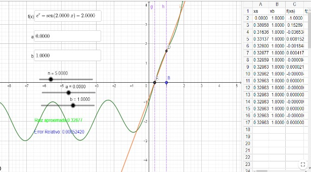

Métodos Numéricos
El método de la falsa posición, también conocido como método de interpolación lineal, es un algoritmo numérico utilizado para encontrar aproximaciones a las raíces de una función f(x). Este método combina aspectos del método de la bisección con la interpolación lineal para converger más rápidamente hacia la raíz deseada. Aquí están los pasos básicos del método de la falsa posición:
1.Elije dos puntos iniciales, x0 y x1, en el dominio de la función f(x). Estos dos puntos deben cumplir con la condición de que f(x0)y f(x1) tengan signos opuestos (es decir, uno es positivo y el otro es negativo), lo que garantiza que haya al menos una raíz en el intervalo [x0 , x1].
2.Calcula la intersección de la línea recta que une los puntos,(x0, f(x0) (x1,f(x1)) con el eje x. Esta intersección es una aproximación de la raíz y se calcula utilizando la ecuación de la recta: x2 = x1 - f(x1) * (x1- x0) / f(x1) - fx0)
3.Evalúa la función f(x) en x2 para obtener f(x2).
4.Determina si f(x2) es igual a cero (en cuyo caso, x2 es una raíz exacta) o si f(x2) tiene el mismo signo que f(x0) o f(x1). Si f(x2) es igual a cero, entonces has encontrado una raíz exacta y puedes detener el proceso. Si f(x2) tiene el mismo signo que f(x0), la raíz se encuentra en el intervalo [x2,x1], por lo que debes reemplazar x0 por Si f(x2) tiene el mismo signo que f(x1), la raíz se encuentra en el intervalo [x0 ,x2 ], por lo que debes reemplazar x1 por x2.
5.Repite los pasos 2-4 hasta que obtengas una aproximación aceptable de la raíz o hasta que se cumpla un criterio de convergencia predefinido (por ejemplo, cuando f(xn) es lo suficientemente pequeño).
" El método de la falsa posición es una técnica iterativa que mejora gradualmente las aproximaciones de la raíz a medida que se repiten los pasos. Aunque puede converger más rápidamente que el método de la bisección en algunos casos, no garantiza la convergencia monótona y puede ser menos estable en presencia de funciones con oscilaciones abruptas. Sin embargo, es útil cuando se requiere un método sencillo que no dependa de la derivada de la función."
# Importación de bibliotecas
from math import e, sin
# Definición de la función MetodoFalsaPosicion
def MetodoFalsaPosicion(funcion, a, b, iteraciones, error_deseado):
# Inicializamos los valores iniciales
x0 = a
x1 = b
contador = 0
while contador < iteraciones:
contador += 1
# Calcular f(x0) y f(x1)
f_x0 = funcion(x0)
f_x1 = funcion(x1)
# Calcular x2 usando el método de la falsa posición
x2 = x1 - (f_x1 * (x0 - x1)) / (f_x0 - f_x1)
# Calcular el error relativo
error_calculado = abs((x2 - x1) / x2) * 100
# Verificar si el error es menor que el error deseado
if error_calculado < error_deseado:
solucion = x2
print('La solución aproximada es: {:.3f}'.format(solucion))
print('Encontrada en: {:.0f}'.format(contador) + ' iteraciones')
print('Con un error relativo de: {:.3f}'.format(error_calculado) + '%')
return
# Actualizar x0 y x1 para la siguiente iteración
x0 = x1
x1 = x2
# Si se llega al límite de iteraciones sin encontrar una solución dentro de la tolerancia
print('No existe solución en ese intervalo')
# Llamada al MétodoFalsaPosicion con la función e^x + sin(2x) - 2 en el intervalo [0, 1]
MetodoFalsaPosicion(lambda x: e**x + sin(2*x) - 2, 0, 1, 20, 0.005)
La solución aproximada es: 0.329 Encontrada en: 5 iteraciones Con un error relativo de: 0.000%Graficación
